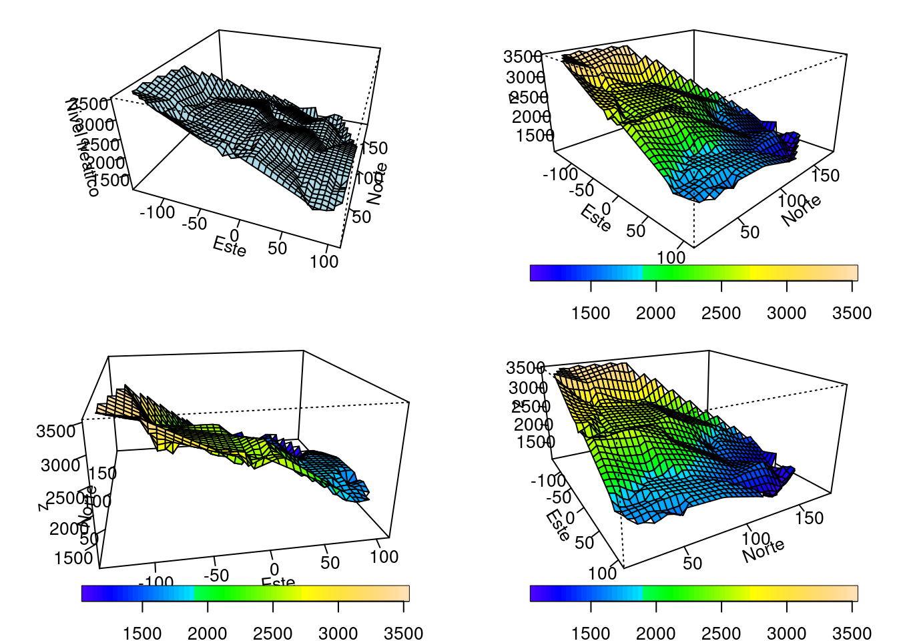
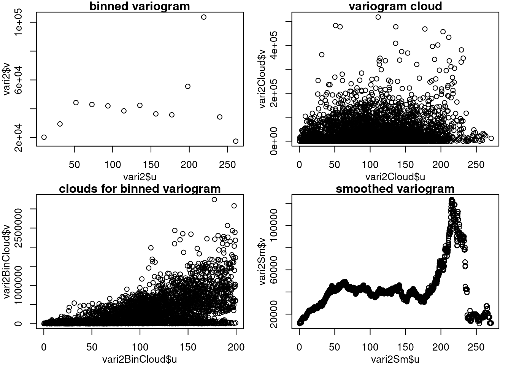
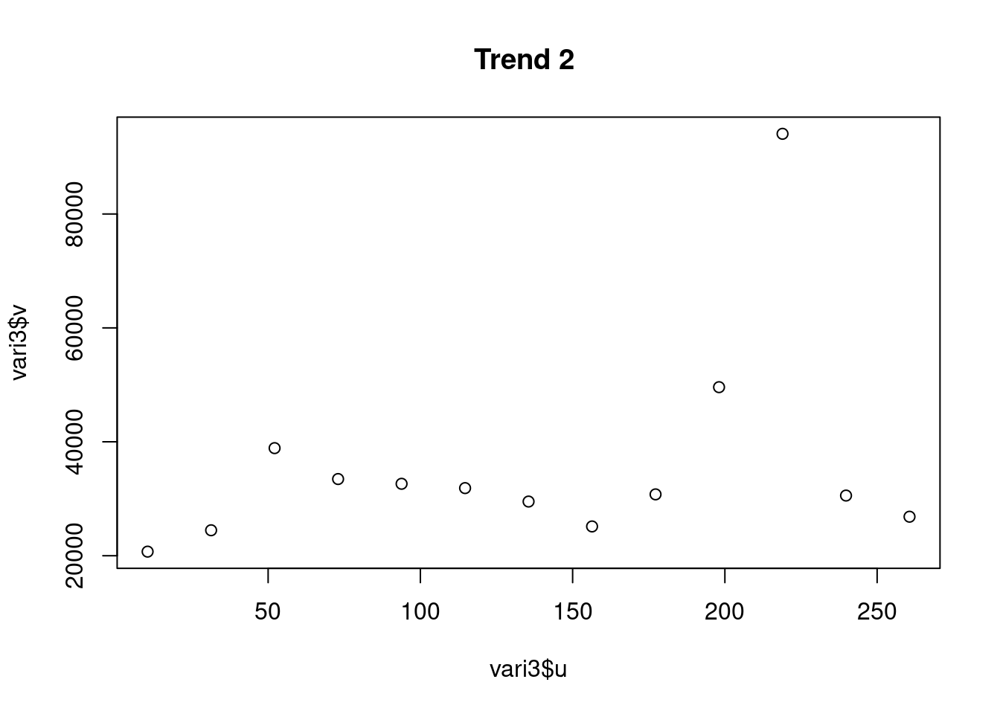
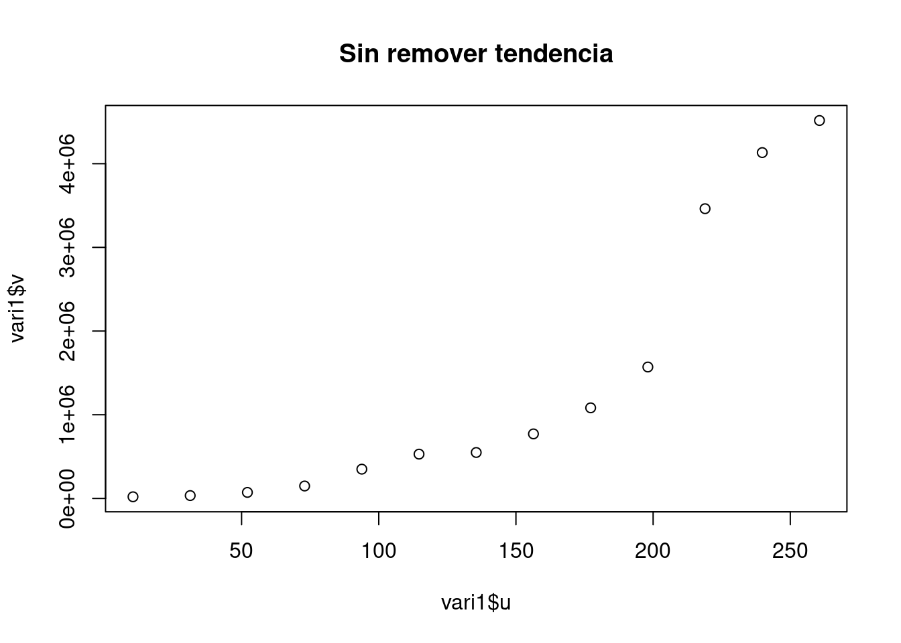
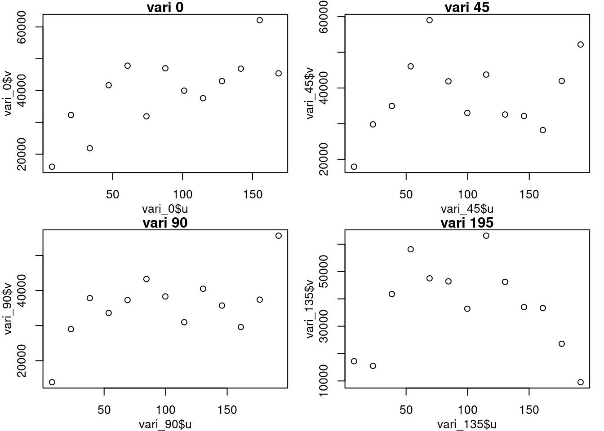
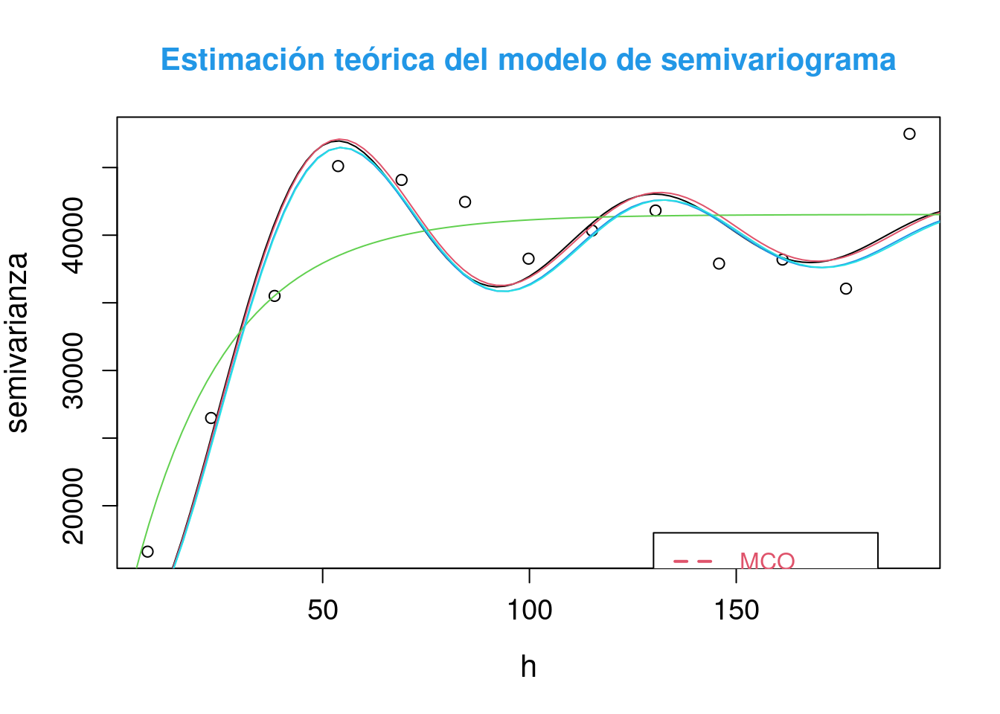

Capítulo 3 Geoestadística univariada con geoR
3.1 Parte descriptiva
3.1.1 Librerías
Lista de librerías con link a la documentación.
rm(list=ls())
library(fields)## Loading required package: spam## Spam version 2.9-1 (2022-08-07) is loaded.
## Type 'help( Spam)' or 'demo( spam)' for a short introduction
## and overview of this package.
## Help for individual functions is also obtained by adding the
## suffix '.spam' to the function name, e.g. 'help( chol.spam)'.##
## Attaching package: 'spam'## The following objects are masked from 'package:base':
##
## backsolve, forwardsolve## Loading required package: viridis## Loading required package: viridisLite##
## Try help(fields) to get started.library(geoR)## Registered S3 method overwritten by 'geoR':
## method from
## plot.variogram sgeostat## --------------------------------------------------------------
## Analysis of Geostatistical Data
## For an Introduction to geoR go to http://www.leg.ufpr.br/geoR
## geoR version 1.9-2 (built on 2022-08-09) is now loaded
## --------------------------------------------------------------library(akima)3.1.2 Lectura de datos
aquifer <- read.table("data_7_GeoestadisticaGEOSTAT/aquifer.txt", head = TRUE, dec = ",")Encabezado de datos aquifer.txt
head(aquifer)## Este Norte Profundidad
## 1 42.78275 127.62282 1464
## 2 -27.39691 90.78732 2553
## 3 -1.16289 84.89600 2158
## 4 -18.61823 76.45199 2455
## 5 96.46549 64.58058 1756
## 6 108.56243 82.92325 1702Summary de los datos aquifer.txt
summary(aquifer)## Este Norte Profundidad
## Min. :-145.24 Min. : 9.414 Min. :1024
## 1st Qu.: -21.30 1st Qu.: 33.682 1st Qu.:1548
## Median : 11.66 Median : 59.158 Median :1797
## Mean : 16.89 Mean : 79.361 Mean :2002
## 3rd Qu.: 70.90 3rd Qu.:131.825 3rd Qu.:2540
## Max. : 112.80 Max. :184.766 Max. :35713.2 GEO_Data
3.2.1 Convertir aquifer a un objeto geodata (geoR obj)
- Documentación as.geodata
aquiferg <- as.geodata(aquifer)
summary(aquiferg)## Number of data points: 85
##
## Coordinates summary
## Este Norte
## min -145.2365 9.41441
## max 112.8045 184.76636
##
## Distance summary
## min max
## 0.2211656 271.0615463
##
## Data summary
## Min. 1st Qu. Median Mean 3rd Qu. Max.
## 1024.000 1548.000 1797.000 2002.282 2540.000 3571.0003.2.2 Gráfico de objeto geodata
- Documentación plotgeodata
Gráfico del objeto geodata
plot(aquiferg, qt.col = c("purple",
"pink",
"green",
"yellow"))
Gráfico con el parametro 3d
plot(aquiferg, scatter3d = T)
Gráfico removiendo la tendencia (trend )
plot(aquiferg, trend = "1st")
3.2.3 Gráficos descriptivos interpolación
- Documentación Interpolación inderp
- Documentación persp
- Documentación drape.plot
par(mfrow = c(2, 2),
mar = c(3, 3, 1, 1),
mgp = c(2, 1, 0))
# Esta función agrupa los siguientes gráficos en
# una matrix 2x2
grillas <- interp(aquifer$Este,
aquifer$Norte,
aquifer$Profundidad)
persp(grillas$x,
grillas$y,
grillas$z,
xlab = "Este",
ylab = "Norte",
zlab = "Nivel freatico",
phi = 30,
theta = 20,
col = "lightblue",
expand = .5,
ticktype = "detailed")
drape.plot(grillas$x,
grillas$y,
grillas$z,
xlab = "Este",
ylab = "Norte",
zlab = "z",
theta = 45,
col = topo.colors(64),
expand = .5,
ticktype = "detailed")
drape.plot(grillas$x,
grillas$y,
grillas$z,
xlab = "Este",
ylab = "Norte",
zlab = "z",
theta = -10,
col = topo.colors(64),
expand = .5,
ticktype = "detailed")
drape.plot(grillas$x,
grillas$y,
grillas$z,
xlab = "Este",
ylab = "Norte",
zlab = "z",
theta = 60,
col = topo.colors(64),
expand = .5,
ticktype = "detailed")
3.2.4 Gráficos de contorno
- Documentación contour
- Documentación filled.contour
par(mfrow = c(2, 1),
mar = c(1,1,1,1))
contour(grillas, nlevels = 10, main = "Contorno")
image(grillas$z, main = "Grilla")
filled.contour(grillas, levels = seq(1000,
5000,
len = 10),
col = heat.colors(10),
main = "grilla niveles")
3.2.5 Funciones y gráficas a partir de la función outer
h <- seq(0, 1, len = 50)
u <- seq(0, 1, len = 50)
ejemplo1CH <- function(h, u, sigma, a, b, c, d, delta) {
(sigma^2/((a^2*u^2+c)^(d/2)))*exp(-(b^2*h^2)/(a^2*u^2+c))*exp(-delta*u^2)
}
h <- seq(0, 1, len = 20)
u <- seq(1, 10, len = 20)
f <- outer(h, u, ejemplo1CH, sigma=3, a=1, b=3, c=1, d=2, delta=0)
par(mfrow = c(2, 2),
mar = c(3, 3, 1, 1),
mgp = c(2, 1, 0))
drape.plot(h,
u,
f,
main = "Cressie-Huang; 1 (25,1,0.6)",
xlab = "h",
ylab = "u",
zlab = "Covarianza",
ltheta = 75,
col = terrain.colors(64))
drape.plot(h,
u,
f,
main = "Cressie-Huang; 1 (25,1,0.6)",
xlab = "h",
ylab = "u",
zlab = "Covarianza",
theta = -150,
col = terrain.colors(64))
persp(h,
u,
f,
main = "Cressie-Huang; 1 (25,1,0.6)",
xlab = "h",
ylab = "u",
zlab = "Covarianza",
ltheta = 75)
contour(h,
u,
f,
col = topo.colors(10),
xlim = c(0,0.6))
3.3 Modelando la media con regresión polinomial
3.3.1 Primer modelo
reg1 <- lm(Profundidad ~ Este + Norte, data = aquifer)
residuales1 <- residuals(reg1)
summary(reg1)##
## Call:
## lm(formula = Profundidad ~ Este + Norte, data = aquifer)
##
## Residuals:
## Min 1Q Median 3Q Max
## -366.96 -161.53 -30.71 148.15 651.20
##
## Coefficients:
## Estimate Std. Error t value Pr(>|t|)
## (Intercept) 2591.4302 38.9599 66.52 <2e-16 ***
## Este -6.7514 0.3438 -19.64 <2e-16 ***
## Norte -5.9872 0.4066 -14.73 <2e-16 ***
## ---
## Signif. codes: 0 '***' 0.001 '**' 0.01 '*' 0.05 '.' 0.1 ' ' 1
##
## Residual standard error: 203.3 on 82 degrees of freedom
## Multiple R-squared: 0.8921, Adjusted R-squared: 0.8894
## F-statistic: 338.9 on 2 and 82 DF, p-value: < 2.2e-16anova(reg1)## Analysis of Variance Table
##
## Response: Profundidad
## Df Sum Sq Mean Sq F value Pr(>F)
## Este 1 19045642 19045642 460.95 < 2.2e-16 ***
## Norte 1 8960172 8960172 216.86 < 2.2e-16 ***
## Residuals 82 3388069 41318
## ---
## Signif. codes: 0 '***' 0.001 '**' 0.01 '*' 0.05 '.' 0.1 ' ' 13.3.2 Segundo modelo
reg2 <- lm(Profundidad ~ Este + Norte +
I(Este^2) + I(Norte^2) +
I(Este * Norte),
data = aquifer)
residuales2 <- residuals(reg2)
summary(reg2)##
## Call:
## lm(formula = Profundidad ~ Este + Norte + I(Este^2) + I(Norte^2) +
## I(Este * Norte), data = aquifer)
##
## Residuals:
## Min 1Q Median 3Q Max
## -407.43 -138.76 -5.74 128.84 648.16
##
## Coefficients:
## Estimate Std. Error t value Pr(>|t|)
## (Intercept) 2.481e+03 6.813e+01 36.424 < 2e-16 ***
## Este -8.374e+00 5.525e-01 -15.157 < 2e-16 ***
## Norte -2.043e+00 1.764e+00 -1.159 0.250146
## I(Este^2) 1.417e-03 4.987e-03 0.284 0.777096
## I(Norte^2) -2.464e-02 9.298e-03 -2.650 0.009708 **
## I(Este * Norte) 2.680e-02 7.413e-03 3.616 0.000526 ***
## ---
## Signif. codes: 0 '***' 0.001 '**' 0.01 '*' 0.05 '.' 0.1 ' ' 1
##
## Residual standard error: 185.9 on 79 degrees of freedom
## Multiple R-squared: 0.9131, Adjusted R-squared: 0.9076
## F-statistic: 166 on 5 and 79 DF, p-value: < 2.2e-16anova(reg2)## Analysis of Variance Table
##
## Response: Profundidad
## Df Sum Sq Mean Sq F value Pr(>F)
## Este 1 19045642 19045642 551.3469 < 2.2e-16 ***
## Norte 1 8960172 8960172 259.3855 < 2.2e-16 ***
## I(Este^2) 1 55368 55368 1.6028 0.2092235
## I(Norte^2) 1 152170 152170 4.4051 0.0390253 *
## I(Este * Norte) 1 451567 451567 13.0723 0.0005259 ***
## Residuals 79 2728964 34544
## ---
## Signif. codes: 0 '***' 0.001 '**' 0.01 '*' 0.05 '.' 0.1 ' ' 13.3.3 Tercer modelo
reg3 <- lm(Profundidad ~ Este * Norte,
data = aquifer)
residuales3 <- residuals(reg3)
summary(reg3)##
## Call:
## lm(formula = Profundidad ~ Este * Norte, data = aquifer)
##
## Residuals:
## Min 1Q Median 3Q Max
## -406.30 -138.88 -13.04 129.36 722.48
##
## Coefficients:
## Estimate Std. Error t value Pr(>|t|)
## (Intercept) 2.627e+03 3.833e+01 68.546 < 2e-16 ***
## Este -8.287e+00 5.658e-01 -14.646 < 2e-16 ***
## Norte -6.649e+00 4.327e-01 -15.366 < 2e-16 ***
## Este:Norte 2.452e-02 7.401e-03 3.314 0.00138 **
## ---
## Signif. codes: 0 '***' 0.001 '**' 0.01 '*' 0.05 '.' 0.1 ' ' 1
##
## Residual standard error: 191.9 on 81 degrees of freedom
## Multiple R-squared: 0.905, Adjusted R-squared: 0.9014
## F-statistic: 257.1 on 3 and 81 DF, p-value: < 2.2e-16anova(reg3)## Analysis of Variance Table
##
## Response: Profundidad
## Df Sum Sq Mean Sq F value Pr(>F)
## Este 1 19045642 19045642 517.06 < 2.2e-16 ***
## Norte 1 8960172 8960172 243.25 < 2.2e-16 ***
## Este:Norte 1 404448 404448 10.98 0.001379 **
## Residuals 81 2983621 36835
## ---
## Signif. codes: 0 '***' 0.001 '**' 0.01 '*' 0.05 '.' 0.1 ' ' 13.4 Estimación del semivariograma empírico
- Documentación variog
vari2 <- variog(aquiferg, trend = "1st")## variog: computing omnidirectional variogramvari2Cloud <- variog(aquiferg, op = "cloud", trend = "1st")## variog: computing omnidirectional variogramvari2BinCloud <- variog(aquiferg,
max.dist = 200,
op = "cloud",
bin.cloud = TRUE)## variog: computing omnidirectional variogramvari2Sm <- variog(aquiferg,
trend = "1st",
op = "sm",
band=11)## variog: computing omnidirectional variogrampar(mfrow = c(2, 2), mar = c(3, 3, 1, 1), mgp = c(2, 1, 0))
plot(vari2$u, vari2$v, main = "binned variogram") # jocastroc: vari2 solo no da el plot se dejo vari2$u,vari2$v
plot(vari2Cloud$u, vari2Cloud$v, main = "variogram cloud")
plot(vari2BinCloud$u, vari2BinCloud$v, main = "clouds for binned variogram")
plot(vari2Sm$u, vari2Sm$v, main = "smoothed variogram")
3.4.1 Explorando estimación clásica, removiendo tendencia
vari1 <- variog(aquiferg)## variog: computing omnidirectional variogramvari2 <- variog(aquiferg, trend = "1st")## variog: computing omnidirectional variogramvari3 <- variog(aquiferg, trend = "2nd")## variog: computing omnidirectional variogramplot(vari1$u,vari1$v, main = "Sin remover tendencia")
plot(vari2$u,vari2$v, main = "Trend 1 ")plot(vari3$u,vari3$v, main = "Trend 2 ")
3.4.2 Explorando estimación resistente a datos atípicos y removiendo tendencia
vari1 <- variog(aquiferg, estimator.type = "modulus")## variog: computing omnidirectional variogramvari2 <- variog(aquiferg, trend = "1st", estimator.type = "modulus")## variog: computing omnidirectional variogramvari3 <- variog(aquiferg, trend = "2nd", estimator.type = "modulus")## variog: computing omnidirectional variogramplot(vari1$u,vari1$v, main = "Sin remover tendencia")
plot(vari2$u,vari2$v, main = "Trend 1 ")
plot(vari3$u,vari3$v, main = "Trend 2 ")
3.4.3 Explorando anisotropía
vari_0 <- variog(aquiferg,
trend = "1st",
max.dist = 200,
dir = 0)## variog: computing variogram for direction = 0 degrees (0 radians)
## tolerance angle = 22.5 degrees (0.393 radians)vari_45 <- variog(aquiferg,
trend = "1st",
max.dist = 200,
dir = pi / 4)## variog: computing variogram for direction = 45 degrees (0.785 radians)
## tolerance angle = 22.5 degrees (0.393 radians)vari_90 <- variog(aquiferg,
trend = "1st",
max.dist = 200,
dir = pi / 2)## variog: computing variogram for direction = 90 degrees (1.571 radians)
## tolerance angle = 22.5 degrees (0.393 radians)vari_135 <- variog(aquiferg,
trend = "1st",
max.dist = 200,
dir = 3 * pi / 4)## variog: computing variogram for direction = 135 degrees (2.356 radians)
## tolerance angle = 22.5 degrees (0.393 radians)par(mfrow = c(2, 2),
mar = c(3, 3, 1, 1),
mgp = c(2, 1, 0))
plot(vari_0$u,vari_0$v, main = "vari 0")
plot(vari_45$u,vari_45$v, main = "vari 45")
plot(vari_90$u,vari_90$v, main = "vari 90")
plot(vari_135$u,vari_135$v, main = "vari 195")
3.5 Estimación teórica del semivariograma
var1 <- variog(aquiferg,trend="1st",max.dist=200)## variog: computing omnidirectional variogram#ini1 <- eyefit(var1)
#cov.model sigmasq phi tausq kappa kappa2 practicalRange
#1 wave 30805.52 13 8984.94 <NA> <NA> 38.8889336320589
ini1 <- c(30805.52, 13)
fitvar1 <- variofit(var1,
cov.model = "wave",
ini1,
fix.nugget = TRUE,
nugget = 8984.94,
wei = "equal")## variofit: covariance model used is wave
## variofit: weights used: equal
## variofit: minimisation function used: optimfitvar2 <- variofit(var1,
cov.model = "wave",
ini1,
fix.nugget = TRUE,
nugget = 8984.94,
wei = "npairs")## variofit: covariance model used is wave
## variofit: weights used: npairs
## variofit: minimisation function used: optimfitvar3 <- variofit(var1,
ini1,
fix.nugget = TRUE,
nugget = 8984.94,
wei = "cressie")## variofit: covariance model used is matern
## variofit: weights used: cressie
## variofit: minimisation function used: optimfitvar4 <- likfit(aquiferg,
coords = aquiferg$coords,
data = aquiferg$data,
trend = "1st",
ini.cov.pars = ini1,
fix.nugget = T,
nugget = 8984.94,
cov.model = "wave",
lik.method = "ML")## kappa not used for the wave correlation function
## ---------------------------------------------------------------
## likfit: likelihood maximisation using the function optim.
## likfit: Use control() to pass additional
## arguments for the maximisation function.
## For further details see documentation for optim.
## likfit: It is highly advisable to run this function several
## times with different initial values for the parameters.
## likfit: WARNING: This step can be time demanding!
## ---------------------------------------------------------------
## likfit: end of numerical maximisation.fitvar5 <- likfit(aquiferg,
coords = aquiferg$coords,
data = aquiferg$data,
trend = "1st",
ini.cov.pars = ini1,
fix.nugget = T,
nugget = 8984.94,
cov.model = "wave",
lik.method = "REML")## kappa not used for the wave correlation function
## ---------------------------------------------------------------
## likfit: likelihood maximisation using the function optim.
## likfit: Use control() to pass additional
## arguments for the maximisation function.
## For further details see documentation for optim.
## likfit: It is highly advisable to run this function several
## times with different initial values for the parameters.
## likfit: WARNING: This step can be time demanding!
## ---------------------------------------------------------------
## likfit: end of numerical maximisation.plot(var1$u,var1$v,
xlab = "h",
ylab = "semivarianza",
cex.lab = 1.3,
cex.axis = 1.2,
main = "Estimación teórica del modelo de semivariograma",
col.main = 4, cex.main =1.3)
lines(fitvar1, col = 1)
lines(fitvar2, col = 2)
lines(fitvar3, col = 3)
lines(fitvar4, col = 4)
lines(fitvar5, col = 5)
legend(130, 18000,
c("MCO", "MCPnpairs", "MCPcressie", "ML", "REML"),
lwd = 2,
lty = 2:7,
col = 2:7,
box.col = 9,
text.col = 2:7)
3.6 Resultados
summary(fitvar1)## $pmethod
## [1] "OLS (ordinary least squares)"
##
## $cov.model
## [1] "wave"
##
## $spatial.component
## sigmasq phi
## 31203.33666 11.93873
##
## $spatial.component.extra
## kappa
## 0.5
##
## $nugget.component
## tausq
## 8984.94
##
## $fix.nugget
## [1] TRUE
##
## $fix.kappa
## [1] TRUE
##
## $practicalRange
## [1] 35.71419
##
## $sum.of.squares
## value
## 159338722
##
## $estimated.pars
## sigmasq phi
## 31203.33666 11.93873
##
## $weights
## [1] "equal"
##
## $call
## variofit(vario = var1, ini.cov.pars = ini1, cov.model = "wave",
## fix.nugget = TRUE, nugget = 8984.94, weights = "equal")
##
## attr(,"class")
## [1] "summary.variomodel"summary(fitvar2)## $pmethod
## [1] "WLS (weighted least squares)"
##
## $cov.model
## [1] "wave"
##
## $spatial.component
## sigmasq phi
## 31311.81333 12.05997
##
## $spatial.component.extra
## kappa
## 0.5
##
## $nugget.component
## tausq
## 8984.94
##
## $fix.nugget
## [1] TRUE
##
## $fix.kappa
## [1] TRUE
##
## $practicalRange
## [1] 36.07688
##
## $sum.of.squares
## value
## 32922890311
##
## $estimated.pars
## sigmasq phi
## 31311.81333 12.05997
##
## $weights
## [1] "npairs"
##
## $call
## variofit(vario = var1, ini.cov.pars = ini1, cov.model = "wave",
## fix.nugget = TRUE, nugget = 8984.94, weights = "npairs")
##
## attr(,"class")
## [1] "summary.variomodel"summary(fitvar3)## $pmethod
## [1] "WLS (weighted least squares)"
##
## $cov.model
## [1] "matern"
##
## $spatial.component
## sigmasq phi
## 32541.18204 22.69704
##
## $spatial.component.extra
## kappa
## 0.5
##
## $nugget.component
## tausq
## 8984.94
##
## $fix.nugget
## [1] TRUE
##
## $fix.kappa
## [1] TRUE
##
## $practicalRange
## [1] 67.99426
##
## $sum.of.squares
## value
## 26.97852
##
## $estimated.pars
## sigmasq phi
## 32541.18204 22.69704
##
## $weights
## [1] "cressie"
##
## $call
## variofit(vario = var1, ini.cov.pars = ini1, fix.nugget = TRUE,
## nugget = 8984.94, weights = "cressie")
##
## attr(,"class")
## [1] "summary.variomodel"summary(fitvar4)## Summary of the parameter estimation
## -----------------------------------
## Estimation method: maximum likelihood
##
## Parameters of the mean component (trend):
## beta0 beta1 beta2
## 2723.1654 -7.1140 -6.9505
##
## Parameters of the spatial component:
## correlation function: wave
## (estimated) variance parameter sigmasq (partial sill) = 30806
## (estimated) cor. fct. parameter phi (range parameter) = 12.11
## anisotropy parameters:
## (fixed) anisotropy angle = 0 ( 0 degrees )
## (fixed) anisotropy ratio = 1
##
## Parameter of the error component:
## (fixed) nugget = 8984.94
##
## Transformation parameter:
## (fixed) Box-Cox parameter = 1 (no transformation)
##
## Practical Range with cor=0.05 for asymptotic range: 36.2227
##
## Maximised Likelihood:
## log.L n.params AIC BIC
## "-572.8" "5" "1156" "1168"
##
## non spatial model:
## log.L n.params AIC BIC
## "-570.8" "4" "1150" "1159"
##
## Call:
## likfit(geodata = aquiferg, coords = aquiferg$coords, data = aquiferg$data,
## trend = "1st", ini.cov.pars = ini1, fix.nugget = T, nugget = 8984.94,
## cov.model = "wave", lik.method = "ML")summary(fitvar5)## Summary of the parameter estimation
## -----------------------------------
## Estimation method: restricted maximum likelihood
##
## Parameters of the mean component (trend):
## beta0 beta1 beta2
## 2723.0308 -7.1143 -6.9479
##
## Parameters of the spatial component:
## correlation function: wave
## (estimated) variance parameter sigmasq (partial sill) = 30806
## (estimated) cor. fct. parameter phi (range parameter) = 12.16
## anisotropy parameters:
## (fixed) anisotropy angle = 0 ( 0 degrees )
## (fixed) anisotropy ratio = 1
##
## Parameter of the error component:
## (fixed) nugget = 8984.94
##
## Transformation parameter:
## (fixed) Box-Cox parameter = 1 (no transformation)
##
## Practical Range with cor=0.05 for asymptotic range: 36.38468
##
## Maximised Likelihood:
## log.L n.params AIC BIC
## "-553.2" "5" "1116" "1129"
##
## non spatial model:
## log.L n.params AIC BIC
## "-552.1" "4" "1112" "1122"
##
## Call:
## likfit(geodata = aquiferg, coords = aquiferg$coords, data = aquiferg$data,
## trend = "1st", ini.cov.pars = ini1, fix.nugget = T, nugget = 8984.94,
## cov.model = "wave", lik.method = "REML")3.7 Pulimiento de medianas
Esta es una alternativa al modelamiento de la media cuando los modelos de regresión polinómicos usuales no logran el objetivo de eliminar la tendencia ya sea porque el tipo de tendencia corresponde mas a unas ventanas móviles o porque hay presentes datos atípicos.
3.7.1 Cargar librerias
Lista de librerías con link a la documentación.
rm(list=ls())
library(gstat)##
## Attaching package: 'gstat'## The following objects are masked from 'package:sgeostat':
##
## fit.variogram, krigelibrary(sp)
library(mvtnorm)##
## Attaching package: 'mvtnorm'## The following objects are masked from 'package:spam':
##
## rmvnorm, rmvt3.7.2 Grilla de las ubicaciones espaciales.
n_x <- 4
n_y <- 6
x <- seq(0, 1, len = n_x)
y <- seq(0, 1, len = n_y)
coordenadas <- as.data.frame(expand.grid(x, y))
names(coordenadas) <- c("X", "Y")Encabezado coordenadas
| X | Y |
|---|---|
| 0.0000000 | 0.0 |
| 0.3333333 | 0.0 |
| 0.6666667 | 0.0 |
| 1.0000000 | 0.0 |
| 0.0000000 | 0.2 |
| 0.3333333 | 0.2 |
3.7.3 Definición de objeto VGM
Esto define un objeto vgm que es el tipo de objeto que usa el paquete gstat para los modelos teóricos de variograma. Con este objeto se pueden definir modelos anidados.
vario <- vgm(10, # Punto de silla
"Exp", # Modelo, ver documentación
0.5) # Rango
print(vario)## model psill range
## 1 Exp 10 0.53.7.4 Matriz de varianza dadas coordenadas.
coordinates(coordenadas) <- ~X + Y
class(coordenadas) # Cambio de objedto dataframe a sp## [1] "SpatialPoints"
## attr(,"package")
## [1] "sp"cov_mat <- vgmArea(coordenadas, # Matriz de ubiaciones SP
vgm = vario) # VGM object
print(dim(cov_mat))## [1] 24 243.7.5 Simulación.
Simulación dada la media y la matriz de varianza
mu <- rep(0, n_x * n_y) # Media del proceso
simu <- rmvnorm(1,
mean = mu,
sigma = cov_mat)
print(simu[1:5])## [1] -1.6917695 2.3187923 -0.2661815 -2.4909205 -1.41165793.7.6 Pulimiento de medianas
Unir las coordenadas con la columna de simulación
data <- as.data.frame(cbind(coordenadas@coords,
Simula = t(simu)))
names(data) <- c("X", "Y", "Var")
print(head(data))## X Y Var
## 1 0.0000000 0.0 -1.6917695
## 2 0.3333333 0.0 2.3187923
## 3 0.6666667 0.0 -0.2661815
## 4 1.0000000 0.0 -2.4909205
## 5 0.0000000 0.2 -1.4116579
## 6 0.3333333 0.2 0.8264604Reshape para matriz, esto transforma la tabla de datos en matriz
tabla <- reshape2::dcast(data,
X ~ Y,
value.var = "Var")
rownames(tabla) <- tabla[, 1]
tabla <- tabla[, c(-1)]
print(tabla)## 0 0.2 0.4 0.6 0.8 1
## 0 -1.6917695 -1.4116579 -3.094371 -5.6501806 -0.7965656 -1.999786
## 0.333333333333333 2.3187923 0.8264604 1.752031 0.6832913 1.9601689 2.909165
## 0.666666666666667 -0.2661815 -0.3941048 1.970392 1.3728696 2.6450545 7.319216
## 1 -2.4909205 -0.8986623 1.758796 1.5248534 6.0101314 8.009519Pulimiento de medianas de la tabla
med <- medpolish(tabla)## 1: 32.48408
## 2: 32.042
## Final: 32.042geo_data <- reshape2::melt(med$residuals)
print(med)##
## Median Polish Results (Dataset: "tabla")
##
## Overall: 1.290137
##
## Row Effects:
## 0 0.333333333333333 0.666666666666667 1
## -4.1937452 -0.0594464 0.0594464 0.3647171
##
## Column Effects:
## 0 0.2 0.4 0.6 0.8 1
## -0.2638317 -1.0739593 0.3126407 -0.3387001 1.7012567 3.8240533
##
## Residuals:
## 0 0.2 0.4 0.6 0.8 1
## 0 1.4757 2.56591 -0.50340 -2.40787 0.40579 -2.9202
## 0.333333333333333 1.3519 0.66973 0.20870 -0.20870 -0.97178 -2.1456
## 0.666666666666667 -1.3519 -0.66973 0.30817 0.36199 -0.40579 2.1456
## 1 -3.8819 -1.47956 -0.20870 0.20870 2.65402 2.5306Reshape de los datos, con efecto de la fila y la columna
tabla_residuales <- as.data.frame(med$residuals)
names(tabla_residuales) <- med$col
rownames(tabla_residuales) <- med$row
geo_data <- reshape2::melt(as.matrix(tabla_residuales))
geo_data <- cbind(data,
geo_data,
med$overall)
names(geo_data) <- c("X",
"Y",
"Var",
"Efecto fila",
"Efecto columa",
"Residual",
"Efecto Global")
print(geo_data)## X Y Var Efecto fila Efecto columa Residual Efecto Global
## 1 0.0000000 0.0 -1.6917695 -4.1937452 -0.2638317 1.4756702 1.290137
## 2 0.3333333 0.0 2.3187923 -0.0594464 -0.2638317 1.3519333 1.290137
## 3 0.6666667 0.0 -0.2661815 0.0594464 -0.2638317 -1.3519333 1.290137
## 4 1.0000000 0.0 -2.4909205 0.3647171 -0.2638317 -3.8819430 1.290137
## 5 0.0000000 0.2 -1.4116579 -4.1937452 -1.0739593 2.5659094 1.290137
## 6 0.3333333 0.2 0.8264604 -0.0594464 -1.0739593 0.6697290 1.290137
## 7 0.6666667 0.2 -0.3941048 0.0594464 -1.0739593 -0.6697290 1.290137
## 8 1.0000000 0.2 -0.8986623 0.3647171 -1.0739593 -1.4795572 1.290137
## 9 0.0000000 0.4 -3.0943711 -4.1937452 0.3126407 -0.5034037 1.290137
## 10 0.3333333 0.4 1.7520307 -0.0594464 0.3126407 0.2086993 1.290137
## 11 0.6666667 0.4 1.9703920 0.0594464 0.3126407 0.3081678 1.290137
## 12 1.0000000 0.4 1.7587956 0.3647171 0.3126407 -0.2086993 1.290137
## 13 0.0000000 0.6 -5.6501806 -4.1937452 -0.3387001 -2.4078724 1.290137
## 14 0.3333333 0.6 0.6832913 -0.0594464 -0.3387001 -0.2086993 1.290137
## 15 0.6666667 0.6 1.3728696 0.0594464 -0.3387001 0.3619862 1.290137
## 16 1.0000000 0.6 1.5248534 0.3647171 -0.3387001 0.2086993 1.290137
## 17 0.0000000 0.8 -0.7965656 -4.1937452 1.7012567 0.4057858 1.290137
## 18 0.3333333 0.8 1.9601689 -0.0594464 1.7012567 -0.9717786 1.290137
## 19 0.6666667 0.8 2.6450545 0.0594464 1.7012567 -0.4057858 1.290137
## 20 1.0000000 0.8 6.0101314 0.3647171 1.7012567 2.6540204 1.290137
## 21 0.0000000 1.0 -1.9997864 -4.1937452 3.8240533 -2.9202317 1.290137
## 22 0.3333333 1.0 2.9091645 -0.0594464 3.8240533 -2.1455795 1.290137
## 23 0.6666667 1.0 7.3192164 0.0594464 3.8240533 2.1455795 1.290137
## 24 1.0000000 1.0 8.0095186 0.3647171 3.8240533 2.5306111 1.290137Validación de la descomposición
valida <- cbind(geo_data$Var,
geo_data[["Efecto fila"]] +
geo_data[["Efecto columa"]] +
geo_data[["Residual"]] +
geo_data[["Efecto Global"]])
valida <- as.data.frame(valida)
names(valida) <- c("datos", "suma")
print(valida)## datos suma
## 1 -1.6917695 -1.6917695
## 2 2.3187923 2.3187923
## 3 -0.2661815 -0.2661815
## 4 -2.4909205 -2.4909205
## 5 -1.4116579 -1.4116579
## 6 0.8264604 0.8264604
## 7 -0.3941048 -0.3941048
## 8 -0.8986623 -0.8986623
## 9 -3.0943711 -3.0943711
## 10 1.7520307 1.7520307
## 11 1.9703920 1.9703920
## 12 1.7587956 1.7587956
## 13 -5.6501806 -5.6501806
## 14 0.6832913 0.6832913
## 15 1.3728696 1.3728696
## 16 1.5248534 1.5248534
## 17 -0.7965656 -0.7965656
## 18 1.9601689 1.9601689
## 19 2.6450545 2.6450545
## 20 6.0101314 6.0101314
## 21 -1.9997864 -1.9997864
## 22 2.9091645 2.9091645
## 23 7.3192164 7.3192164
## 24 8.0095186 8.0095186